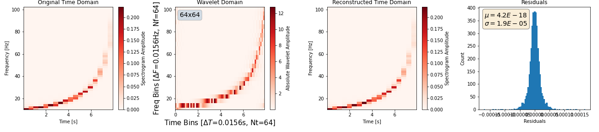

Roundtrip transfomation#
Time to Wavelet to Time
Let’s transform a time-domain signal to wavelet-domain and back to time-domain and compare the original and reconstructed signals.
Time domain signal#
To start, lets define a function to generate the time-domain signal.
Show code cell content
from scipy.signal import chirp
import numpy as np
from typing import List
from pywavelet.transforms.types import TimeSeries, TimeAxis
def generate_chirp_time_domain_signal(
t: np.ndarray, freq_range: List[float]
) -> TimeSeries:
fs = 1 / (t[1] - t[0])
nyquist = fs / 2
fmax = max(freq_range)
assert (
fmax < nyquist
), f"f_max [{fmax:.2f} Hz] must be less than f_nyquist [{nyquist:2f} Hz]."
y = chirp(
t, f0=freq_range[0], f1=freq_range[1], t1=t[-1], method="hyperbolic"
)
return TimeSeries(data=y, time=TimeAxis(t))
Provide data as a TimeSeries/FrequencySeries object
These objects will ensure correct bins for time/frequency in the WDM-domain.
Define data-sizes#
We can now generate the timeseries. We need to be careful about the length of the timeseries (\(ND\)), and the number of time bins (\(N_t\)) and number of frequency bins (\(N_f\)) to use for our transform.
We must have \(ND=N_t\times N_f\).
# Sizes
dt = 1 / 512
Nt, Nf = 2**6, 2**6
mult = 16
freq_range = (10, 0.2 * (1 / dt))
ND = Nt * Nf
# time grid
ts = np.arange(0, ND) * dt
h_time = generate_chirp_time_domain_signal(ts, freq_range)
WDM transform#
With the timeseries, the selection for \(\{ND, N_t, N_f\}\), we can transform the timeseries into the WDM domain.
from pywavelet.transforms import from_time_to_wavelet, from_wavelet_to_time
# transform to wavelet domain
h_wavelet = from_time_to_wavelet(h_time, Nf=Nf, Nt=Nt, mult=mult)
# transform back to time domain
h_reconstructed = from_wavelet_to_time(h_wavelet, dt=h_time.dt, mult=mult)
Plots#
Finally, we can plot the WDM-transform of the timeseries, along with residuals from the round-trip transform back to time-domain.
Show code cell content
import matplotlib.pyplot as plt
def plot_residuals(ax, residuals):
ax.hist(residuals, bins=100)
# add textbox of mean and std
mean = residuals.mean()
std = residuals.std()
textstr = f"$\mu={mean:.1E}$\n$\sigma={std:.1E}$"
props = dict(boxstyle="round", facecolor="wheat", alpha=0.5)
ax.text(
0.05,
0.95,
textstr,
transform=ax.transAxes,
fontsize=14,
verticalalignment="top",
bbox=props,
)
ax.set_xlabel("Residuals")
ax.set_ylabel("Count")
return ax
fig, axes = plt.subplots(1, 4, figsize=(18, 4))
_ = h_time.plot_spectrogram(ax=axes[0])
_ = h_wavelet.plot(ax=axes[1], absolute=True, cmap="Reds")
_ = h_reconstructed.plot_spectrogram(ax=axes[2])
_ = plot_residuals(axes[3], h_time.data - h_reconstructed.data)
axes[0].set_title("Original Time Domain")
axes[1].set_title("Wavelet Domain")
axes[2].set_title("Reconstructed Time Domain")
axes[3].set_title("Residuals")
for ax in axes[0:3]:
ax.set_ylim(*freq_range)
fig.savefig("roundtrip_demo.png")

Note: pywavelet provides some useful wavelet plotting utilities, availible from the Wavelet object:
help(h_wavelet.plot)
Help on method plot in module pywavelet.transforms.types.wavelet:
plot(ax=None, *args, **kwargs) -> matplotlib.figure.Figure method of pywavelet.transforms.types.wavelet._Wavelet instance
Custom method.